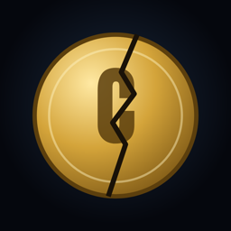

CODICIAPolítica de privacidad
Última actualización: 4 de octubre de 2026.
Esta política explica qué datos trata CODICIA, el canal de YouTube @codicia_tv, y su herramienta interna conectada a la API de YouTube. El responsable es solers, con contacto en admin@solers.es.
Qué es la herramienta
Es una aplicación interna que solo usa el propio canal, con su propia cuenta de Google. No está abierta al público ni se ofrece a otras personas o canales.
Qué datos usa
- Estadísticas del canal CODICIA (visualizaciones, tiempo de visualización, suscriptores, retención), a través de la API de YouTube Analytics.
- Comentarios públicos de los vídeos de CODICIA (texto, nombre público del autor y fecha), a través de la API de datos de YouTube, para leerlos y responderlos desde el canal.
No accede a correos, contactos, archivos ni a ningún otro dato de la cuenta de Google, ni a datos de otros canales.
Para qué se usan
Solo para entender qué vídeos funcionan mejor y para responder a los comentarios del canal. No se usan para publicidad, no se venden y no se ceden a terceros.
Dónde se guardan y cuánto tiempo
Las estadísticas y comentarios se consultan en el momento y, como mucho, se guardan resúmenes en el ordenador del equipo para preparar informes internos. Se borran cuando dejan de ser útiles y, en cualquier caso, en un plazo máximo de 30 días. La llave de acceso a la API se guarda solo en ese ordenador.
Servicios de YouTube y Google
La herramienta usa los Servicios de la API de YouTube. Al interactuar con CODICIA en YouTube aceptas las Condiciones de servicio de YouTube, y tus datos en YouTube se rigen por la Política de privacidad de Google.
Cómo retirar el acceso
El titular de la cuenta puede retirar en cualquier momento el permiso de la herramienta desde la página de conexiones de su cuenta de Google. Si comentaste en un vídeo de CODICIA y quieres que borremos cualquier dato tuyo, escríbenos a admin@solers.es.
Cambios
Si esta política cambia, se actualizará en esta misma página con su nueva fecha.